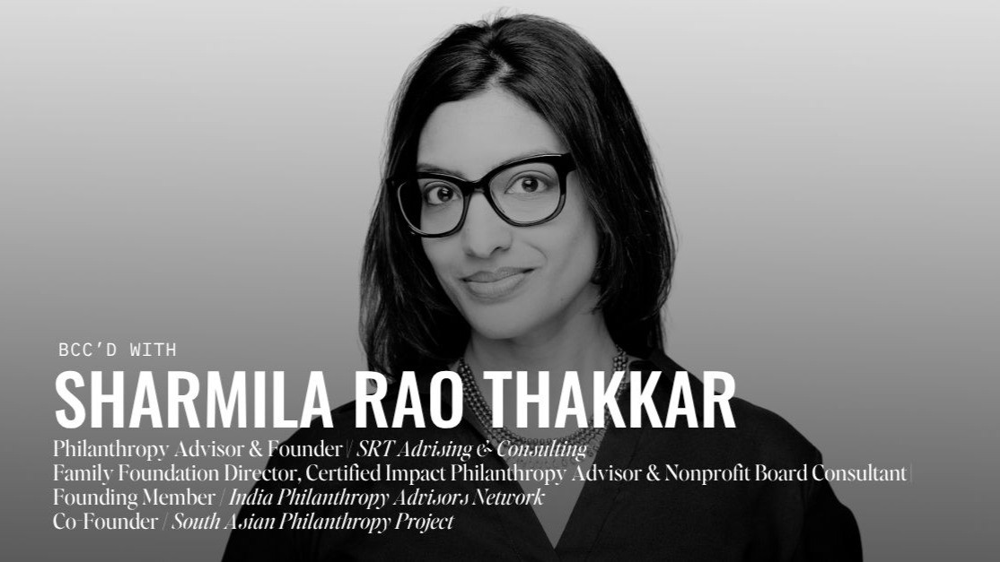
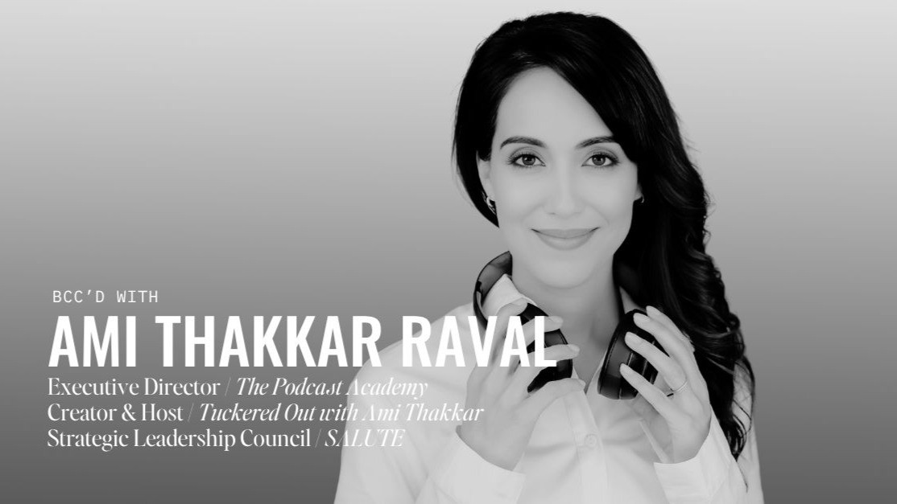
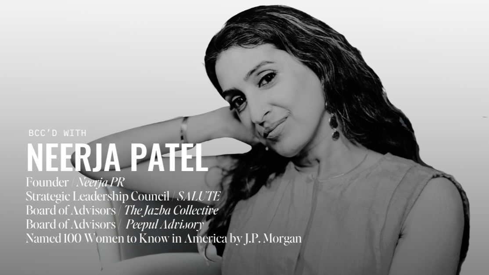
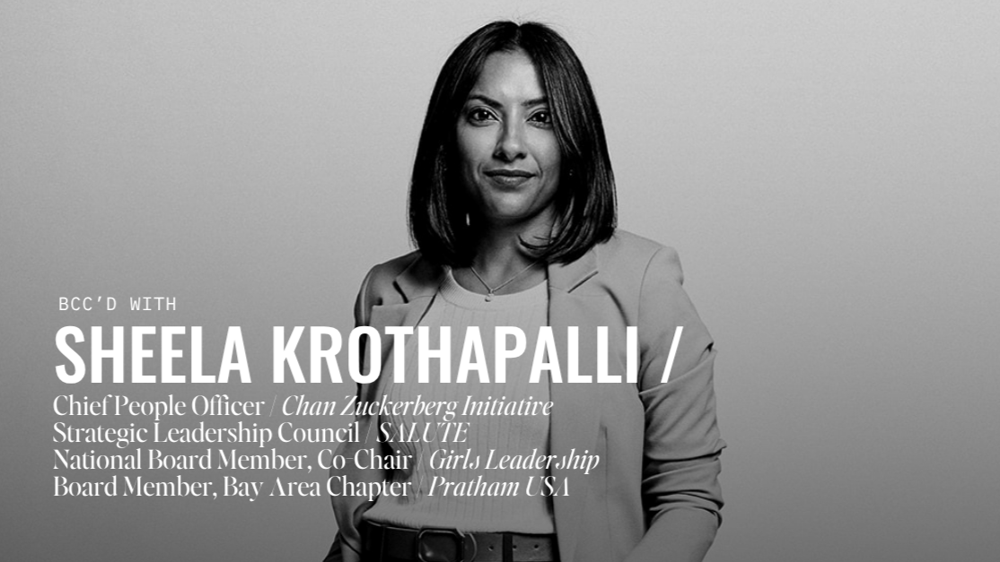

Sep 28, 2026
Jaime Patel
BCC’d goes behind the scenes with the leaders shaping the SALUTE community—the experiences, decisions, and convictions that don’t fit into a professional bio.
Meet the leadersOn changing direction, cultivating dignity, and making women’s empowerment more than a talking point.
The stories behind the titles. The decisions behind the milestones. Get to know the leaders shaping the SALUTE community.




“I was told early in my career, and in my personal life, that I was too much, too direct, too loud. Twenty years later, those are the exact things that have worked in my favor.”
These conversations bring leaders from across the SALUTE community to audiences well beyond the people who already know them.
Source: SALUTE Instagram insights, October 2026, including promoted posts.
Interested in BCC’d—as a future guest, collaborator, or supporter? Email us at hello@salute.community.